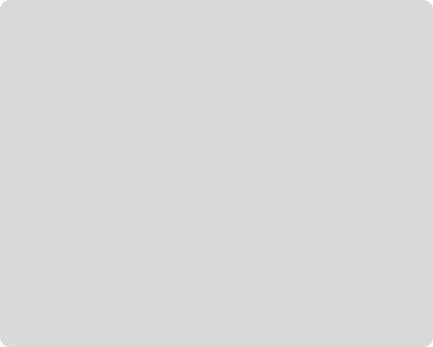

Conheça o Athletic Punk
O Athletic Punk foi criado com o objetivo de destacar algumas modalidades e apresentar os benefícios das práticas esportivas na nossa saúde e bem-estar. Seja você um atleta ou apenas alguém com o objetivo de melhorar sua qualidade de vida, este site está aqui para ajudar, contribuindo para achar o seu esporte ideal e entender os seus benefícios para sua saúde.

O que você irá encontrar no nosso site:
Esportes: Explore as modalidades, conheça os esportes. Nosso guia detalhado ajudará você a conhecer as características de cada modalidade;
Benefícios: Entenda como cada esporte pode contribuir para o seu bem-estar físico e mental. Nossas páginas mostram estudos sobre como as diferentes atividades físicas ajudam na prevenção de doenças, aumento de força e resistência e no gerenciamento de uma vida saudável;
Hábitos saudáveis: Conheça hábitos saudáveis, e implante na sua rotina. Descubra o que é melhor para você e adote hábitos benéficos para o seu quadro de saúde.
No Athletic Punk, acreditamos que a prática de esportes é uma das melhores maneiras de melhorar sua saúde e qualidade de vida e estamos aqui para guiá-lo nessa jornada e garantir que você encontre o esporte que melhor se adapta às suas necessidades e objetivos.
Comece hoje mesmo a sua jornada para uma vida mais saudável e ativa com o Athletic Punk – Seu parceiro ideal para descobrir o mundo do esporte e seus incríveis benefícios!
Esportes
A prática de exercícios físicos é fundamental para o crescimento, desenvolvimento e aprendizagem, associada a melhoria da qualidade de vida e saúde. Atualmente, as pessoas tem adotado um estilo de vida mais saudável com busca de uma qualidade de vida melhor, usando então, os esportes como aliados, que além de serem atividades físicas, também integram a conexão do corpo com a mente. A prática de esportes promove um equilíbrio pessoal, sendo uma forma de reduzir os níveis de estresse, melhorar a autoestima e os níveis de felicidade.
Descubra do que seu corpo é capaz de fazer e vá além, contribuindo para sua saúde e bem-estar.